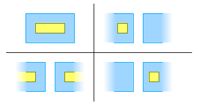

- Object
-
- AbstractEnvelope
-
- Direct Known Subclasses:
- GeneralEnvelope, ImmutableEnvelope
public abstract class AbstractEnvelope extends Object implements Envelope, Emptiable
Base class forEnvelopeimplementations. This base class does not hold any state and does not implement theSerializableorCloneableinterfaces. The internal representation, and the choice to be cloneable or serializable, is left to subclasses.Implementors needs to define at least the following methods:
All other methods, including
toString(),equals(Object)andhashCode(), are implemented on top of the above four methods.Spanning the anti-meridian of a Geographic CRSThe Web Coverage Service (WCS) specification authorizes (with special treatment) cases where upper < lower at least in the longitude case. They are envelopes crossing the anti-meridian, like the red box below (the green box is the usual case). The default implementation of methods listed in the right column can handle such cases.
Supported methods: Choosing the range of longitude valuesGeographic CRS typically have longitude values in the [-180 … +180]° range, but the [0 … 360]° range is also occasionally used. Users of this class need to ensure that this envelope CRS is associated to axes having the desired minimum and maximum value.Note on positive and negative zerosThe IEEE 754 standard defines two different values for positive zero and negative zero. When used with SIS envelopes and keeping in mind the above discussion, those zeros have different meanings:- The [-0…0]° range is an empty envelope.
- The [0…-0]° range makes a full turn around the globe, like the [-180…180]° range except that the former range spans across the anti-meridian.
- Since:
- 0.3
Defined in the
sis-referencingmodule
-
-
Constructor Summary
Constructors Modifier Constructor and Description protectedAbstractEnvelope()Constructs an envelope.
-
Method Summary
All Methods Static Methods Instance Methods Abstract Methods Concrete Methods Modifier and Type Method and Description static AbstractEnvelopecastOrCopy(Envelope envelope)Returns the given envelope as anAbstractEnvelopeinstance.booleancontains(DirectPosition position)Tests if a specified coordinate is inside the boundary of this envelope.booleancontains(Envelope envelope)Returnstrueif this envelope completely encloses the specified envelope.booleancontains(Envelope envelope, boolean edgesInclusive)Returnstrueif this envelope completely encloses the specified envelope.booleanequals(Envelope other, double eps, boolean epsIsRelative)Compares to the specified envelope for equality up to the specified tolerance value.booleanequals(Object object)Returnstrueif the specified object is an envelope of the same class with equals coordinates and CRS.abstract doublegetLower(int dimension)Returns the limit in the direction of decreasing ordinate values in the specified dimension.DirectPositiongetLowerCorner()A coordinate position consisting of all the lower ordinate values.doublegetMaximum(int dimension)Returns the maximal ordinate value for the specified dimension.DirectPositiongetMedian()A coordinate position consisting of all the median ordinate values.doublegetMedian(int dimension)Returns the median ordinate along the specified dimension.doublegetMinimum(int dimension)Returns the minimal ordinate value for the specified dimension.doublegetSpan(int dimension)Returns the envelope span (typically width or height) along the specified dimension.doublegetSpan(int dimension, Unit<?> unit)Returns the envelope span along the specified dimension, in terms of the given units.abstract doublegetUpper(int dimension)Returns the limit in the direction of increasing ordinate values in the specified dimension.DirectPositiongetUpperCorner()A coordinate position consisting of all the upper ordinate values.inthashCode()Returns a hash value for this envelope.booleanintersects(Envelope envelope)Returnstrueif this envelope intersects the specified envelope.booleanintersects(Envelope envelope, boolean edgesInclusive)Returnstrueif this envelope intersects the specified envelope.booleanisAllNaN()Returnsfalseif at least one ordinate value is not NaN.booleanisEmpty()Determines whether or not this envelope is empty.Envelope[]toSimpleEnvelopes()Returns this envelope as an array of simple (without wraparound) envelopes.StringtoString()Formats this envelope as a "BOX" element.-
Methods inherited from interface Envelope
getCoordinateReferenceSystem, getDimension
-
-
-
-
Method Detail
-
castOrCopy
public static AbstractEnvelope castOrCopy(Envelope envelope)
Returns the given envelope as anAbstractEnvelopeinstance. If the given envelope is already an instance ofAbstractEnvelope, then it is returned unchanged. Otherwise the coordinate values and the CRS of the given envelope are copied in a new envelope.- Parameters:
envelope- The envelope to cast, ornull.- Returns:
- The values of the given envelope as an
AbstractEnvelopeinstance. - See Also:
GeneralEnvelope.castOrCopy(Envelope),ImmutableEnvelope.castOrCopy(Envelope)
-
getLowerCorner
public DirectPosition getLowerCorner()
A coordinate position consisting of all the lower ordinate values. The default implementation returns a view over thegetLower(int)method, so changes in this envelope will be immediately reflected in the returned direct position. If the particular case of theGeneralEnvelopesubclass, the returned position supports also write operations, so changes in the position are reflected back in the envelope.Note: The Web Coverage Service (WCS) 1.1 specification uses an extended interpretation of the bounding box definition. In a WCS 1.1 data structure, the lower corner defines the edges region in the directions of decreasing coordinate values in the envelope CRS. This is usually the algebraic minimum coordinates, but not always. For example, an envelope crossing the anti-meridian could have a lower corner longitude greater than the upper corner longitude. Such extended interpretation applies mostly to axes havingWRAPAROUNDrange meaning.- Specified by:
getLowerCornerin interfaceEnvelope- Returns:
- A view over the lower corner, typically (but not necessarily) containing minimal ordinate values.
-
getUpperCorner
public DirectPosition getUpperCorner()
A coordinate position consisting of all the upper ordinate values. The default implementation returns a view over thegetUpper(int)method, so changes in this envelope will be immediately reflected in the returned direct position. If the particular case of theGeneralEnvelopesubclass, the returned position supports also write operations, so changes in the position are reflected back in the envelope.Note: The Web Coverage Service (WCS) 1.1 specification uses an extended interpretation of the bounding box definition. In a WCS 1.1 data structure, the upper corner defines the edges region in the directions of increasing coordinate values in the envelope CRS. This is usually the algebraic maximum coordinates, but not always. For example, an envelope crossing the anti-meridian could have an upper corner longitude less than the lower corner longitude. Such extended interpretation applies mostly to axes havingWRAPAROUNDrange meaning.- Specified by:
getUpperCornerin interfaceEnvelope- Returns:
- A view over the upper corner, typically (but not necessarily) containing maximal ordinate values.
-
getMedian
public DirectPosition getMedian()
A coordinate position consisting of all the median ordinate values. The default implementation returns a view over thegetMedian(int)method, so changes in this envelope will be immediately reflected in the returned direct position.- Returns:
- The median coordinates.
-
getLower
public abstract double getLower(int dimension) throws IndexOutOfBoundsExceptionReturns the limit in the direction of decreasing ordinate values in the specified dimension. This is usually the algebraic minimum, except if this envelope spans the anti-meridian.- Parameters:
dimension- The dimension for which to obtain the ordinate value.- Returns:
- The starting ordinate value at the given dimension.
- Throws:
IndexOutOfBoundsException- If the given index is negative or is equals or greater than the envelope dimension.
-
getUpper
public abstract double getUpper(int dimension) throws IndexOutOfBoundsExceptionReturns the limit in the direction of increasing ordinate values in the specified dimension. This is usually the algebraic maximum, except if this envelope spans the anti-meridian.- Parameters:
dimension- The dimension for which to obtain the ordinate value.- Returns:
- The starting ordinate value at the given dimension.
- Throws:
IndexOutOfBoundsException- If the given index is negative or is equals or greater than the envelope dimension.
-
getMinimum
public double getMinimum(int dimension) throws IndexOutOfBoundsExceptionReturns the minimal ordinate value for the specified dimension. In the typical case of envelopes not spanning the anti-meridian, this method returns thegetLower(int)value verbatim. In the case of envelope spanning the anti-meridian, this method returns the axis minimum value.- Specified by:
getMinimumin interfaceEnvelope- Parameters:
dimension- The dimension for which to obtain the ordinate value.- Returns:
- The minimal ordinate value at the given dimension.
- Throws:
IndexOutOfBoundsException- If the given index is negative or is equals or greater than the envelope dimension.
-
getMaximum
public double getMaximum(int dimension) throws IndexOutOfBoundsExceptionReturns the maximal ordinate value for the specified dimension. In the typical case of envelopes not spanning the anti-meridian, this method returns thegetUpper(int)value verbatim. In the case of envelope spanning the anti-meridian, this method returns the axis maximum value.- Specified by:
getMaximumin interfaceEnvelope- Parameters:
dimension- The dimension for which to obtain the ordinate value.- Returns:
- The maximal ordinate value at the given dimension.
- Throws:
IndexOutOfBoundsException- If the given index is negative or is equals or greater than the envelope dimension.
-
getMedian
public double getMedian(int dimension) throws IndexOutOfBoundsExceptionReturns the median ordinate along the specified dimension. In most cases, the result is equals (minus rounding error) to:median = (getUpper(dimension) + getLower(dimension)) / 2;
Spanning the anti-meridian of a Geographic CRSIf upper < lower and the range meaning for the requested dimension is wraparound, then the median calculated above is actually in the middle of the space outside the envelope. In such cases, this method shifts the median value by half of the periodicity (180° in the longitude case) in order to switch from outer space to inner space. If the axis range meaning is notWRAPAROUND, then this method returnsNaN.- Specified by:
getMedianin interfaceEnvelope- Parameters:
dimension- The dimension for which to obtain the ordinate value.- Returns:
- The median ordinate at the given dimension, or
Double.NaN. - Throws:
IndexOutOfBoundsException- If the given index is negative or is equals or greater than the envelope dimension.
-
getSpan
public double getSpan(int dimension)
Returns the envelope span (typically width or height) along the specified dimension. In most cases, the result is equals (minus rounding error) to:span = getUpper(dimension) - getLower(dimension);
Spanning the anti-meridian of a Geographic CRSIf upper < lower and the range meaning for the requested dimension is wraparound, then the span calculated above is negative. In such cases, this method adds the periodicity (typically 360° of longitude) to the span. If the result is a positive number, it is returned. Otherwise this method returnsNaN.- Specified by:
getSpanin interfaceEnvelope- Parameters:
dimension- The dimension for which to obtain the span.- Returns:
- The span (typically width or height) at the given dimension, or
Double.NaN. - Throws:
IndexOutOfBoundsException- If the given index is negative or is equals or greater than the envelope dimension.
-
getSpan
public double getSpan(int dimension, Unit<?> unit) throws IndexOutOfBoundsException, ConversionExceptionReturns the envelope span along the specified dimension, in terms of the given units. The default implementation invokesgetSpan(int)and converts the result.- Parameters:
dimension- The dimension to query.unit- The unit for the return value.- Returns:
- The span in terms of the given unit.
- Throws:
IndexOutOfBoundsException- If the given index is out of bounds.ConversionException- if the length can't be converted to the specified units.
-
toSimpleEnvelopes
public Envelope[] toSimpleEnvelopes()
Returns this envelope as an array of simple (without wraparound) envelopes. The length of the returned array depends on the number of dimensions where a wraparound range is found. Typically, wraparound occurs only in the range of longitude values, when the range crosses the anti-meridian (a.k.a. date line). However this implementation will take in account any axis having wraparound range meaning.Special cases:
- If this envelope is empty, then this method returns an empty array.
- If this envelope does not have any wraparound behavior, then this method returns
thisin an array of length 1. This envelope is not cloned. - If this envelope crosses the anti-meridian (a.k.a. date line) then this method represents this envelope as two separated simple envelopes.
- While uncommon, the envelope could theoretically crosses the limit of other axis having wraparound range meaning. If wraparound occur along n axes, then this method represents this envelope as 2ⁿ separated simple envelopes.
- Returns:
- A representation of this envelope as an array of non-empty envelope.
- Since:
- 0.4
- See Also:
Envelope2D.toRectangles(),GeneralEnvelope.simplify()
-
isEmpty
public boolean isEmpty()
Determines whether or not this envelope is empty. An envelope is empty if it has zero dimension, or if the span of at least one axis is negative, 0 orNaN.Note: Strictly speaking, there is an ambiguity if a span isIfNaNor if the envelope contains both 0 and infinite spans (since 0⋅∞ =NaN). In such cases, this method arbitrarily ignores the infinite values and returnstrue.isEmpty()returnsfalse, thenisAllNaN()is guaranteed to also returnfalse. However the converse is not always true.- Specified by:
isEmptyin interfaceEmptiable- Returns:
trueif this envelope is empty.- See Also:
DefaultGeographicBoundingBox.isEmpty(),RectangularShape.isEmpty()
-
isAllNaN
public boolean isAllNaN()
Returnsfalseif at least one ordinate value is not NaN. ThisisAllNaN()check is different than theisEmpty()check since it returnsfalsefor a partially initialized envelope, whileisEmpty()returnsfalseonly after all dimensions have been initialized. More specifically, the following rules apply:- If
isAllNaN() == true, thenisEmpty() == true - If
isEmpty() == false, thenisAllNaN() == false - The converse of the above-cited rules are not always true.
- Returns:
trueif this envelope has NaN values.- See Also:
GeneralEnvelope.setToNaN(),DefaultGeographicBoundingBox.isEmpty()
- If
-
contains
public boolean contains(DirectPosition position) throws MismatchedDimensionException
Tests if a specified coordinate is inside the boundary of this envelope. If it least one ordinate value in the given point isNaN, then this method returnsfalse.Pre-conditionsThis method assumes that the specified point uses the same CRS than this envelope. For performance reasons, it will no be verified unless Java assertions are enabled.Spanning the anti-meridian of a Geographic CRSFor any dimension, if upper < lower then this method uses an algorithm which is the opposite of the usual one: rather than testing if the given point is inside the envelope interior, this method tests if the given point is outside the envelope exterior.- Parameters:
position- The point to text.- Returns:
trueif the specified coordinate is inside the boundary of this envelope;falseotherwise.- Throws:
MismatchedDimensionException- if the specified point doesn't have the expected dimension.AssertionError- If assertions are enabled and the envelopes have mismatched CRS.
-
contains
public boolean contains(Envelope envelope) throws MismatchedDimensionException
Returnstrueif this envelope completely encloses the specified envelope.Pre-conditionsThis method assumes that the specified envelope uses the same CRS than this envelope. For performance reasons, it will no be verified unless Java assertions are enabled.Spanning the anti-meridian of a Geographic CRSFor every cases illustrated below, the yellow box is considered completely enclosed in the blue envelope:
- Parameters:
envelope- The envelope to test for inclusion.- Returns:
trueif this envelope completely encloses the specified one.- Throws:
MismatchedDimensionException- if the specified envelope doesn't have the expected dimension.AssertionError- If assertions are enabled and the envelopes have mismatched CRS.- Since:
- 0.4
- See Also:
intersects(Envelope),equals(Envelope, double, boolean)
-
contains
public boolean contains(Envelope envelope, boolean edgesInclusive) throws MismatchedDimensionException
Returnstrueif this envelope completely encloses the specified envelope. If one or more edges from the specified envelope coincide with an edge from this envelope, then this method returnstrueonly ifedgesInclusiveistrue.This method is subject to the same pre-conditions than
contains(Envelope), and handles envelopes spanning the anti-meridian in the same way.Warning: This method may change or be removed in a future SIS version. For API stability, use thecontains(Envelope)method instead. See SIS-172 for more information.- Parameters:
envelope- The envelope to test for inclusion.edgesInclusive-trueif this envelope edges are inclusive.- Returns:
trueif this envelope completely encloses the specified one.- Throws:
MismatchedDimensionException- if the specified envelope doesn't have the expected dimension.AssertionError- If assertions are enabled and the envelopes have mismatched CRS.- See Also:
intersects(Envelope, boolean)
-
intersects
public boolean intersects(Envelope envelope) throws MismatchedDimensionException
Returnstrueif this envelope intersects the specified envelope.Pre-conditionsThis method assumes that the specified envelope uses the same CRS than this envelope. For performance reasons, it will no be verified unless Java assertions are enabled.Spanning the anti-meridian of a Geographic CRSThis method can handle envelopes spanning the anti-meridian.- Parameters:
envelope- The envelope to test for intersection.- Returns:
trueif this envelope intersects the specified one.- Throws:
MismatchedDimensionException- if the specified envelope doesn't have the expected dimension.AssertionError- If assertions are enabled and the envelopes have mismatched CRS.- Since:
- 0.4
- See Also:
contains(Envelope, boolean),equals(Envelope, double, boolean)
-
intersects
public boolean intersects(Envelope envelope, boolean edgesInclusive) throws MismatchedDimensionException
Returnstrueif this envelope intersects the specified envelope. If one or more edges from the specified envelope coincide with an edge from this envelope, then this method returnstrueonly ifedgesInclusiveistrue.This method is subject to the same pre-conditions than
intersects(Envelope), and handles envelopes spanning the anti-meridian in the same way.Warning: This method may change or be removed in a future SIS version. For API stability, use theintersects(Envelope)method instead. See SIS-172 for more information.- Parameters:
envelope- The envelope to test for intersection.edgesInclusive-trueif this envelope edges are inclusive.- Returns:
trueif this envelope intersects the specified one.- Throws:
MismatchedDimensionException- if the specified envelope doesn't have the expected dimension.AssertionError- If assertions are enabled and the envelopes have mismatched CRS.- See Also:
contains(Envelope, boolean),equals(Envelope, double, boolean)
-
equals
public boolean equals(Envelope other, double eps, boolean epsIsRelative)
Compares to the specified envelope for equality up to the specified tolerance value. The tolerance valueepscan be either relative to the envelope span along each dimension or can be an absolute value (as for example some ground resolution of a grid coverage).- If
epsIsRelativeis set totrue, the actual tolerance value for a given dimension i iseps×spanwherespanis the maximum of this envelope span and the specified envelope span along dimension i. - If
epsIsRelativeis set tofalse, the actual tolerance value for a given dimension i iseps.
Note: Relative tolerance values (as opposed to absolute tolerance values) help to workaround the fact that tolerance value are CRS dependent. For example the tolerance value need to be smaller for geographic CRS than for UTM projections, because the former typically has a [-180…180]° range while the later can have a range of thousands of meters.Coordinate Reference SystemTo be considered equal, the two envelopes must have the same dimension and their CRS must be equals, ignoring metadata. If at least one envelope has a null CRS, then the CRS are ignored and the ordinate values are compared as if the CRS were equal.- Parameters:
other- The envelope to compare with.eps- The tolerance value to use for numerical comparisons.epsIsRelative-trueif the tolerance value should be relative to axis length, orfalseif it is an absolute value.- Returns:
trueif the given object is equal to this envelope up to the given tolerance value.- See Also:
contains(Envelope),intersects(Envelope)
- If
-
equals
public boolean equals(Object object)
Returnstrueif the specified object is an envelope of the same class with equals coordinates and CRS.Implementation note: This implementation requires that the providedobjectargument is of the same class than this envelope. We do not relax this rule since not every implementations in the SIS code base follow the same contract.
-
hashCode
public int hashCode()
Returns a hash value for this envelope.
-
toString
public String toString()
Formats this envelope as a "BOX" element. The output is of the form "BOXnD(lower corner,upper corner)" where n is the number of dimensions. The number of dimension is written only if different than 2.Example:BOX(-90 -180, 90 180)BOX3D(-90 -180 0, 90 180 1)
Note: TheThe string returned by this method can be parsed by theBOXelement is not part of the standard Well Known Text (WKT) format. However it is understood by many softwares, for example GDAL and PostGIS.GeneralEnvelopeconstructor.
-
-